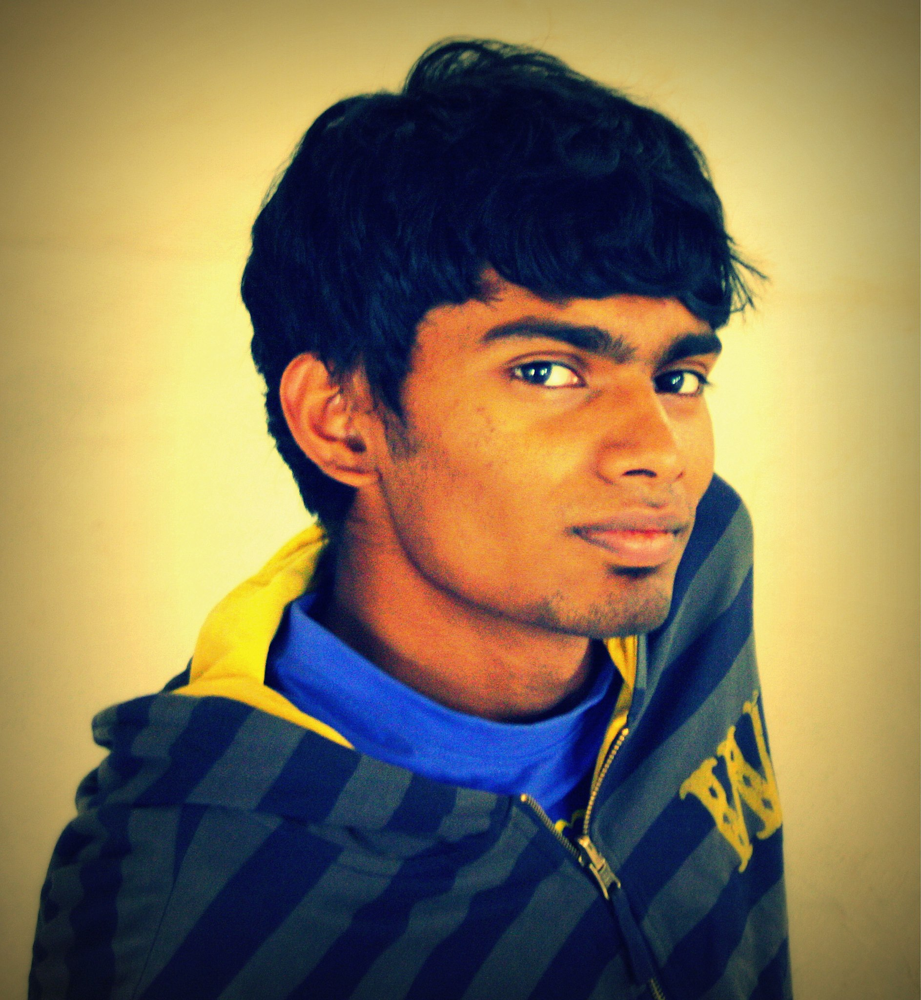

Before joining engineering, many students are confident, curious, logical and studious. These are almost pre-requisites for a degree in engineer, and I was no different. However, when you join an IIT, you realize that you're exposure to the real world has been highly limited, that your opportunities to engage your curiosities, to structure logical and engineered solutions to problems, both theoretical and practical real life ones, have never been tested.
Campus life in IIT Jodhpur changes students to broad-minded bright individuals, capable of networking, academically proficient, and with a whole new experience to face the real world. The most amazing aspect of campus life is that it brings together a plethora of diverse personalities, puts them through almost identical tasks, events, courses and activities, and yet manages to give each person a unique experience. Though engineering is the focus of the courses, it is not the most important thing a student takes away from these four years. Friends, memories, activities like sports, technical projects, cultural events and diverse hobbies like photography, painting, kite-flying and trekking - there is everything you could wish for to experience. The most sacred tool is time management.
After completing my degree in 2013, I've decided to combine my inherent interest in technology and my passion for strategy and management at National Instruments as an Application Engineer. My thanks will always remain with the institute for making me what I am today, giving me the opportunities to explore the world with freedom and resources. IIT Jodhpur is entrepreneurial, it's different, and it gives you lessons you never imagined you would learn when you took up engineering. By Rishi Ayyer Alumini Batch 2013

By Sankha Narayan Guria 4th Year System Science
- Document what you do: You always experiment, try out cool things everyday (they may not seem cool to you, but it maybe for others), just take some time out and make a note of that, write a blog post. Not because that would be show-off but because it will go a long way in inspiring and helping your juniors or any other person from outside your college as well. I can vouch for it because there have been many blogs from whom I have taken inspiration.
- Be passionate for engineering: Make things, create! Its the best way to have fun, when code that you had been hacking on runs, or the Arduino LED glows, the ecstasy is incomparable. At the end you will end up tinkering with a lot of things and a whole bunch of messy ideas in your head.
- Give back: You will always find yourself looking up answers on Google, Stack Overflow and the like. Take a moment after you solve your problem, share it with the world, answer a few questions on Stack Overflow. Improve the community as a member, because if others hadn not contributed, you would not have found the answers.
- Open your eyes and ears: Look outside your world, there are a lot of great people to meet and find out. Keep yourself updated with the latest from the tech world. Read other blogs, HN, etc.
- Re-invent the wheel: You can go ahead and try to make a square wheel (does not matter if you fail), the experience that you gain along the way will be what will be valuable to you. Do not be afraid to re-implement something because it already exists - who knows, yours could be different or better?
- Find your specialty: That one thing that you are good at, do it often, iterate until you are good. You find yourself drawn to cool user-interfaces then just do HTML/CSS just do not for Python because your friend is doing it. As it is stated in the Unix Philosophy - "Do one thing, do it well!"
Two years ago we had a dream, a dream of studying at one of the most prestigious colleges of our country-the IITs, and becoming one of the most successful technocrats. To turn our dream into reality, we channelized all our efforts sincerely into one direction with a vision that someday we’ll definitely make it….and yes!! We actually did it. After going through phases of rigorous hard work and sincere study, we finally cracked JEE and made it into IIT. At last we reached our destination, IIT Jodhpur. Before coming here we had a few doubts regarding the new IITs, when it came to comparison with the old ones, but as soon as we reached here, our pre-conceived notions vanished. We gradually got acquainted to the amazing IITJ-culture during the orientation program and during the course of preparation of our amazing fresher’s night-An event that we will reminisce for the rest of our lives.
Life here at IIT Jodhpur is truly interesting and very much “happeningâ€. So many events going around every day that one gets an opportunity to explore oneself in all manners. Our day starts here with our morning CPA (Compulsory Physical Activities) which is an effort to channelize our positive energy so as to prepare our body and mind for the whole day in a better manner. Then onwards we move to our college where we attend lectures and lab sessions, which serves as an amazing time to learn practical aspects of technology along with a little gossip with friends.
We return to our hostel (our GPRA, our home away from home),and the actual fun starts here, a short nap, chit chat with friends, evening snacks, sport activities rejuvenate us. By late evening, our IIT is in full swing, this is the time when people actually come out of their rooms and get involved in the happenings here. A walk around the campus would let you see numerous activities going on all around, players with full zeal at the basketball court. A great hustle and bustle near the mess, meetings and seminars of different clubs inside the porta cabin and readers issuing books from the book club. Loud music can be heard coming from hostel rooms (much louder than what comes from music room), nerds studying with their doors closed, the rest gossiping or watching TV in the common room, the list is endless. All I can say is that coming here, we have finally achieved the ultimate destination that we had dreamt of. Personally, I feel is that we are getting opportunities to learn much more than what we really expected and imagined before coming here. Whole hearted support of seniors, their immense contribution towards making us visualize and learn things in an innovative manner, sense of working as a team and most importantly , wise management of time are the things which sets our IIT apart from other colleges. We are fortunate enough to be here with four golden years in our hands, making constructive use of which, we will be able to reach the heights of success. Thinking about the next four years of my college life, I only smile and think that I'll be ready for everything and every task I'll be given. By Neha Singh chauhan 4th Year System Science
Still remember the day when for the first time I stepped out of my house for college to realise a dream which was seen almost 2 years ago. Now, Here I stand a year since entering the college and it seems that it was just yesterday that I came here. Rewinding the time passed here leaves me with great memories to cherish upon. The first few days were a bit nostalgic and homesick but as time passed a family type atmosphere began to develop where we all began to cherish each other's company. With the support and encouragement of seniors, I began to participate in extra-curriculars and realized what other talents were hidden inside me.
The campus life provides us infinite opportunities to excel in any field we wish to, be it sports or dance or literature or management. The Student's Body is completely devoted to work for the betterment of a student with all its councils working throughout the year for holistic development of all students. In addition the fests provide us the opportunity to learn various real life aptitudes like marketing, resource management etc. When I came here I didn't know even a single word about marketing and by the end of the year I had done marketing for both our college festivals learning all the basics of this crucial skill. When it comes to the religious festivals, we celebrate each and every festival with great dignity and breath-taking enjoyment. The whole college comes together to carouse the festivity of Diwali, Holi, Janmashtami, Ganesh Chaturthi and many others.
Although, academics is the first preference for many yet it is not the only thing that you learn while being here. Everything you can wish in a student life - Great hostel life, reliable friends, cultural events, distinct hobbies like photography, dance, drama, sports all this you get here. The most important thing you learn is multi-tasking and time management. My journey at IIT Jodhpur has been no less than a dream run with various milestones achieved along the way. I just hope this continues my remaining stay here. By Saurabh Pandey 3rd Year Mechanical Engineering
The aim to reach an Indian institute of Technology is valued by many, and I was one amongst them. The dream was bequeathed in life to me as I came to IIT Jodhpur. I was overjoyed no doubt but I had my fair share of hesitations too. As with most of students joining a new IIT, I had certain confusions regarding the legitimacy of my decision which soon vanished as I embraced the life which I was destined to lead here. A year has passed since I first stepped into the premises of this place and today I find myself altogether a different personality. The opportunities provided to the individuals for their holistic development is vast and often I found myself wondering how to invest my time to learn the maximum that was being made available to me. Most students during the tedious duration for the preparation for the entrance, tend to leave their extracurricular’s behind and I was no exception. To quench this thirst of getting out of the ‘academic box’, there were numerous clubs to my aid. Honing my marketing skills for the inter college fests provided me a whole new approach of how different events are actually executed which otherwise I just took for granted. Playing basketball, messing around with friends, trying new hobbies is what has become my favourite pastime now. Celebration of various festivals is a treat for the mind and gives the much required relaxation from the daily routine. Besides academics there is lot to learn about life and IIT Jodhpur has provided just the appropriate foundation for the same. By Vaibhav Paliwal 2nd Year Computer Science and Engineering